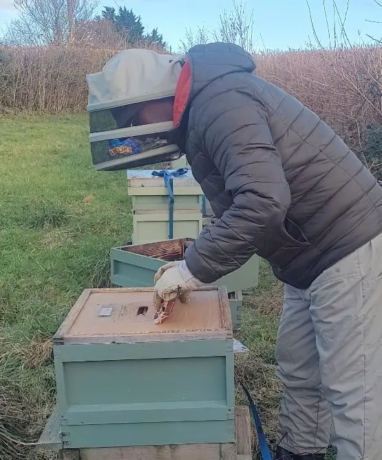
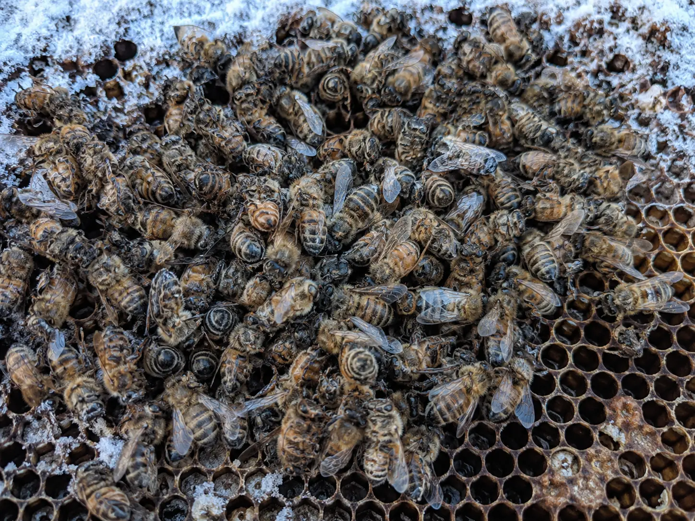
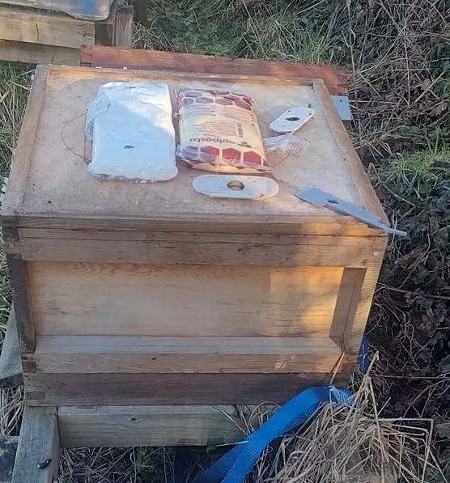

Winter losses and colony survival
Winter Colony Loss: Why Bees Die Over Winter
Last updated: 15 August 2026

Winter colony loss is one of the most common and frustrating problems for UK beekeepers. A colony may look reasonable in autumn but fail during winter or early spring because it was short of accessible food, weakened by varroa, too small to maintain a cluster, or affected by queen problems before winter began.
Winter losses are rarely caused by cold alone. Honey bees can survive cold weather if they have enough food, a strong enough cluster and dry conditions. Problems usually appear when several pressures combine, such as a weak colony, high mite levels and poor access to stores.
This guide explains the main causes of winter colony loss, what signs to look for, how to reduce the risk, and what to check if a colony dies.
Main causes of winter colony loss
Starvation is one of the most common causes. A colony can simply run out of stores, especially in late winter and early spring when brood rearing starts and food demand increases. A hive that felt heavy earlier in the season can become dangerously light before spring forage is reliable.
Isolation starvation is different. Bees may die with food still in the hive because the cluster cannot reach it. In cold weather, the cluster may be too small or too far from the stores to move safely.
Varroa and viruses are another major winter risk. High mite pressure in late summer and autumn can damage the winter bee population. The colony may enter winter looking present, but the bees may not live long enough or be healthy enough to carry the colony through.
Weak colonies, queen failure, damp conditions and poor ventilation can all add to the risk. A missing or failing queen in autumn can leave the colony short of young winter bees, while damp conditions can chill the cluster and make survival harder.
Common winter loss signs

Dead bees clustered tightly on comb can suggest the colony died while trying to maintain warmth. If bees are found with their heads deep in cells and there are no accessible stores nearby, starvation is likely.
Food present elsewhere in the hive but not near the cluster may suggest isolation starvation. Very few bees remaining in the hive may point towards varroa-related collapse, queen failure, absconding-like loss or a colony that dwindled before winter.
Mould, damp comb, wet hive parts or a musty smell can indicate moisture problems, although damp may also develop after the colony has died. Always look at the cluster position, stores, brood remains, varroa history and colony records together.
How to prevent winter colony loss
Prevention starts before winter. Colonies need enough stores, a healthy population of winter bees, effective varroa control, a viable queen and a hive setup that suits their strength. A weak colony going into winter is always at higher risk.
Manage varroa in late summer and autumn so the bees raised for winter are as healthy as possible. Check colony strength before winter and avoid leaving small colonies with too much empty space. Make sure entrances are protected from robbing and wasps before cold weather arrives.
Good ventilation and dry conditions also matter. The aim is not to create a draughty hive, but to avoid trapped moisture dripping onto the bees. Sound roofs, good hive condition and sensible setup all help.
Winter feeding tips

Hefting is one of the quickest ways to assess winter stores without opening the hive fully. If the hive feels light, act promptly. In cold weather, fondant is usually more suitable than thin syrup because bees may not be able to process liquid feed properly.
Food needs to be reachable. Placing fondant directly above or close to the cluster is more useful than placing food somewhere the bees cannot access in cold conditions. If you need to open the hive, keep it brief and avoid chilling the colony.
Late winter and early spring are high-risk periods because brood rearing may increase before reliable forage returns. Continue checking weight and store access until natural forage is consistent.
What to do if a colony dies in winter
Do not rush to clear the hive before looking at the evidence. Take photos and notes first. Record where the bees are, where the stores are, whether bees have heads in cells, whether brood remains are present, and whether there are signs of damp, robbing, pests or disease.
Check the hive methodically. Look at cluster position, food location, brood condition, comb damage, varroa history, autumn treatment timing and queen status from your last inspections. The goal is to identify the most likely cause, not simply to guess from one sign.
Follow: Hive post-mortem analysis.
How HiveTag can help
HiveTag can help you track the information that matters before winter: feeding, stores, varroa treatments, queen status, colony strength and winter checks. These records make it easier to see whether a colony entered winter strong enough or whether a problem was developing earlier.
If a colony dies, your records give you a timeline to compare with the post-mortem. You can check when it was last queenright, when it was fed, how strong it was, and what varroa management was carried out.
Learn more: HiveTag.
Winter Colony Loss FAQ
Starvation and varroa pressure are two of the most common causes of winter colony loss in the UK, often combined with weak colony strength or poor autumn preparation.
Yes, bees can survive cold weather if they have enough food, a strong enough cluster and dry conditions. Cold alone is rarely the only cause of winter loss.
Only open a hive briefly and when necessary in winter. Hefting, entrance checks and quick fondant placement are usually safer than long inspections.
A weak colony is less likely to survive winter because it has fewer bees to maintain warmth, defend stores and manage stress. Some weak colonies survive, but the risk of starvation and collapse is higher.